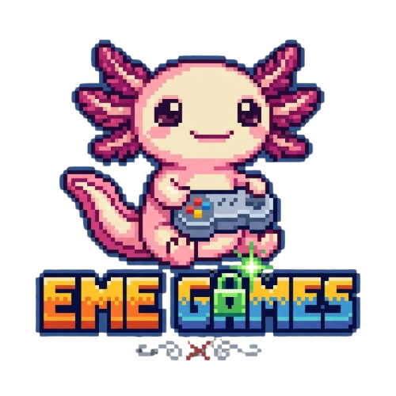

EL ESTUDIO
SOBRE EME GAMES
Un estudio independiente enfocado en crear videojuegos con identidad propia.

NUESTRA VISIÓN
Desarrollar ideas propias y convertirlas en experiencias memorables.
EME GAMES nace como un estudio independiente con el objetivo de desarrollar videojuegos, aprender, experimentar y construir proyectos que puedan crecer junto con su comunidad.